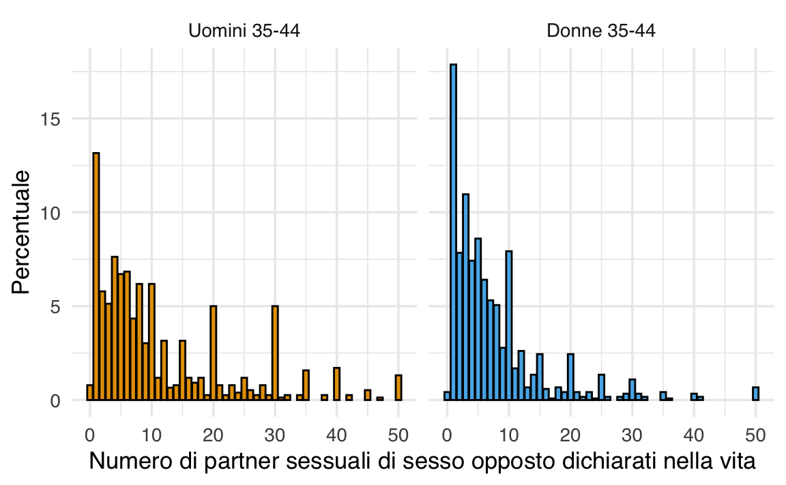

here::here("code", "_common.R") |>
source()
# Load packages
if (!requireNamespace("pacman")) install.packages("pacman")
pacman::p_load(tidyr, viridis, vcd)18 Indicatori di tendenza centrale e variabilità
In questo capitolo imparerai a
- Calcolare e interpretare i principali indici di tendenza centrale e di variabilità.
Prerequisiti
- Leggere “Most Psychological Researchers Assume Their Samples Are Ergodic: Evidence From a Year of Articles in Three Major Journals” (Speelman et al., 2024).
Preparazione del Notebook
18.1 Introduzione
La visualizzazione grafica dei dati rappresenta il pilastro fondamentale di ogni analisi quantitativa. Grazie alle rappresentazioni grafiche adeguate, è possibile individuare importanti caratteristiche di una distribuzione, quali la simmetria o l’asimmetria, nonché la presenza di una o più mode. Successivamente, al fine di descrivere sinteticamente le principali caratteristiche dei dati, si rende necessario l’utilizzo di specifici indici numerici. In questo capitolo, verranno presentati i principali indicatori della statistica descrittiva.
18.2 Indici di Tendenza Centrale
Gli indici di tendenza centrale sono misure statistiche che cercano di rappresentare un valore tipico o centrale all’interno di un insieme di dati. Sono utilizzati per ottenere una comprensione immediata della distribuzione dei dati senza dover analizzare l’intero insieme. Gli indici di tendenza centrale sono fondamentali nell’analisi statistica, in quanto forniscono una sintesi semplice e comprensibile delle caratteristiche principali di un insieme di dati. I principali indici di tendenza centrale sono:
- Media: La media è la somma di tutti i valori divisa per il numero totale di valori. È spesso utilizzata come misura generale di tendenza centrale, ma è sensibile agli estremi (valori molto alti o molto bassi).
- Mediana: La mediana è il valore che divide l’insieme di dati in due parti uguali. A differenza della media, non è influenzata da valori estremi ed è quindi più robusta in presenza di outlier.
- Moda: La moda è il valore che appare più frequentemente in un insieme di dati. In alcuni casi, può non essere presente o esserci più di una moda.
La scelta dell’indice di tendenza centrale appropriato dipende dalla natura dei dati e dall’obiettivo dell’analisi. Ad esempio, la mediana potrebbe essere preferita alla media se l’insieme di dati contiene valori anomali che potrebbero distorcere la rappresentazione centrale. La conoscenza e l’applicazione corretta di questi indici possono fornire una preziosa intuizione sulle caratteristiche centrali di una distribuzione di dati.
18.3 Moda
La moda (\(\text{Mo}\)) rappresenta il valore della variabile che compare con maggiore frequenza in una distribuzione. In altre parole, è il valore più ricorrente nei dati.
- Nelle distribuzioni unimodali, esiste una sola moda, che coincide con il valore centrale della distribuzione più frequente.
- Tuttavia, in alcune distribuzioni, possono emergere più di una moda, rendendole multimodali. In questi casi, la moda perde il suo significato di indicatore unico di tendenza centrale, poiché la presenza di più valori con frequenze elevate rende difficile individuare un singolo punto di riferimento.
18.4 Mediana
La mediana (\(\tilde{x}\)) corrisponde al valore che divide il campione in due metà: il 50% dei dati è inferiore o uguale alla mediana e il restante 50% è superiore o uguale. A differenza della media, la mediana è meno influenzata dai valori estremi, rendendola una misura particolarmente robusta in presenza di dati asimmetrici o outlier.
18.5 Media
La media aritmetica di un insieme di valori rappresenta il punto centrale o il baricentro della distribuzione dei dati. È calcolata come la somma di tutti i valori divisa per il numero totale di valori, ed è espressa dalla formula:
\[ \bar{x}=\frac{1}{n}\sum_{i=1}^n x_i, \tag{18.1}\]
dove \(x_i\) rappresenta i valori nell’insieme, \(n\) è il numero totale di valori, e \(\sum\) indica la sommatoria.
18.5.1 Proprietà della Media
Una proprietà fondamentale della media è che la somma degli scarti di ciascun valore dalla media è zero:
\[ \sum_{i=1}^n (x_i - \bar{x}) = 0.\notag \tag{18.2}\]
Infatti,
\[ \begin{aligned} \sum_{i=1}^n (x_i - \bar{x}) &= \sum_i x_i - \sum_i \bar{x}\notag\\ &= \sum_i x_i - n \bar{x}\notag\\ &= \sum_i x_i - \sum_i x_i = 0.\notag \end{aligned} \]
Questa proprietà implica che i dati sono equamente distribuiti intorno alla media.
18.5.2 La media come Centro di Gravità dell’Istogramma
La media aritmetica può essere interpretata come il centro di gravità o il punto di equilibrio della distribuzione dei dati. In termini fisici, il centro di gravità è il punto in cui la massa di un sistema è equilibrata o concentrata.
In termini statistici, possiamo considerare la media come il punto in cui la distribuzione dei dati è in equilibrio. Ogni valore dell’insieme di dati può essere visto come un punto materiale con una massa proporzionale al suo valore. Se immaginiamo questi punti disposti su una linea, con valori più grandi a destra e più piccoli a sinistra, la media corrisponderà esattamente al punto in cui la distribuzione sarebbe in equilibrio.
18.5.3 Principio dei Minimi Quadrati
La posizione della media minimizza la somma delle distanze quadrate dai dati, un principio noto come “metodo dei minimi quadrati”. Matematicamente, questo si traduce nel fatto che la somma dei quadrati degli scarti tra ciascun valore e la media è minima. Questo principio è alla base dell’analisi statistica dei modelli di regressione e conferma l’interpretazione della media come centro di gravità dell’istogramma.
18.5.4 Calcolo della Media con R
Per calcolare la media di un piccolo numero di valori in R, possiamo utilizzare la somma di questi valori e dividerla per il numero totale di elementi. Consideriamo ad esempio i valori 12, 44, 21, 62, 24:
(12 + 44 + 21 + 62 + 24) / 5
#> [1] 32.6ovvero
18.5.5 Le Proporzioni Sono Medie
Se una collezione consiste solo di uni e zeri, allora la somma della collezione è il numero di uni in essa, e la media della collezione è la proporzione di uni.
È possibile sostituire 1 con il valore booleano True e 0 con False:
18.5.6 Limiti della Media Aritmetica
La media aritmetica, tuttavia, ha alcune limitazioni: non sempre è l’indice più adeguato per descrivere accuratamente la tendenza centrale della distribuzione, specialmente quando si verificano asimmetrie o valori anomali (outlier). In queste situazioni, è più indicato utilizzare la mediana o la media spuntata (come spiegheremo successivamente).
18.6 Come Descrivere la Tendenza Centrale in Distribuzioni Asimmetriche
Il diverso significato degli indici di tendenza centrale – moda, media e mediana – diventa evidente quando si analizzano distribuzioni asimmetriche. Per illustrare questo concetto, utilizzeremo i dati del Progetto Natsal, contenuti nel file sexual-partners.csv.
Negli anni ’80, con la crescente preoccupazione per l’AIDS, le autorità sanitarie del Regno Unito si resero conto della mancanza di dati affidabili sui comportamenti sessuali della popolazione. In particolare, vi erano dubbi sulla frequenza con cui le persone cambiavano partner, sul numero di partner simultanei e sulle pratiche sessuali adottate. Questa conoscenza era essenziale per prevedere la diffusione delle malattie sessualmente trasmissibili nella società e per pianificare adeguatamente i servizi sanitari. Tuttavia, si faceva ancora riferimento ai dati raccolti da Alfred Kinsey negli Stati Uniti negli anni ’40, che non tenevano conto della rappresentatività del campione.
A partire dalla fine degli anni ’80, vennero dunque avviati nel Regno Unito e negli Stati Uniti ampi e rigorosi studi sui comportamenti sessuali, nonostante una forte opposizione in alcuni ambienti. Nel Regno Unito, il governo guidato da Margaret Thatcher ritirò il proprio sostegno a un’importante indagine sui comportamenti sessuali all’ultimo momento. Fortunatamente, i ricercatori riuscirono a ottenere finanziamenti da enti benefici, dando vita al National Sexual Attitudes and Lifestyles Survey (Natsal). Da allora, questa indagine viene condotta ogni dieci anni, a partire dal 1990. La terza rilevazione, denominata Natsal-3, è stata effettuata intorno al 2010.
Poniamoci il problema di descrivere la tendenza centrale per i dati contenuti nel file sexual-partners.csv, separatamente per maschi e femmine. Il dataset fornisce la distribuzione del numero totale dichiarato di partner sessuali di sesso opposto nella vita per uomini e donne di età compresa tra 35 e 44 anni. I dati provengono dal sondaggio Natsal-3 e corrispondono a un totale di 796 uomini e 1193 donne.
Procediamo all’importazione dei dati per iniziare l’analisi.
Esaminiamo alcune righe prese a caso dal data frame df:
La colonna Gender riporta il genere del rispondente e la colonna NumPartners il numero di partner sessuali di sesso opposto dichiarati.
Esaminiamo la numerosità di ciascun gruppo.
df |>
group_by(Gender) |>
summarize(count = n())
#> # A tibble: 2 × 2
#> Gender count
#> <chr> <int>
#> 1 Man 796
#> 2 Woman 1193Poniamoci innnanzitutto il problema di visualizzare i dati con un istogramma, separatamente per maschi e femmine. Per ragioni di spazio ci limiteremo ad un numero massimo di partner sessuali di 50 (ma in questo campione il numero massimo arriva a 501 per gli uomini e 550 per le donne):
df |>
group_by(Gender) |>
summarize(maximum = max(NumPartners))
#> # A tibble: 2 × 2
#> Gender maximum
#> <chr> <int>
#> 1 Man 501
#> 2 Woman 550Iniziamo calcolando la percentuale di intervistati per ciascun valore possibile della variabile “numero di partner sessuali”, compreso tra 0 e 50. Il calcolo verrà svolto in due passaggi:
Conteggio delle frequenze assolute: Per ogni valore della variabile “numero di partner sessuali” e per ciascun gruppo di genere (uomini e donne), contiamo quante volte quel valore compare nei dati.
Calcolo delle percentuali relative: Per ciascun gruppo di genere, dividiamo il conteggio di ogni valore per il totale delle osservazioni nel gruppo e moltiplichiamo per 100 per ottenere la percentuale.
# Filtra i dati troncando il numero di partner a 50
df_truncated <- df[df$NumPartners <= 50, ]
# Calcola il conteggio per ciascun genere e numero di partner
counts_data <- df_truncated %>%
group_by(Gender, NumPartners) %>% # Raggruppa per genere e numero di partner
summarise(Count = n(), .groups = "drop") # Conta le occorrenze
# Aggiunge la percentuale relativa per ciascun genere
percentage_data <- counts_data %>%
group_by(Gender) %>% # Raggruppa nuovamente per genere
mutate(Percentage = Count / sum(Count) * 100) # Calcola la percentuale
head(percentage_data)
#> # A tibble: 6 × 4
#> # Groups: Gender [1]
#> Gender NumPartners Count Percentage
#> <chr> <int> <int> <dbl>
#> 1 Man 0 6 0.789
#> 2 Man 1 100 13.2
#> 3 Man 2 44 5.79
#> 4 Man 3 39 5.13
#> 5 Man 4 58 7.63
#> 6 Man 5 51 6.71Possiamo ora creare gli istogrammi per maschi e femmine:
# Crea l'istogramma separato per maschi e femmine
gender_labels <- c("Man" = "Uomini 35-44", "Woman" = "Donne 35-44")
# Trova il massimo valore di Percentage per impostare lo stesso limite
y_max <- max(percentage_data$Percentage)
# Grafico con limiti dell'asse y uguali nei due pannelli
percentage_data |>
ggplot(aes(NumPartners, Percentage, fill = Gender)) +
geom_col(position = "dodge", color = "black") +
facet_wrap(~Gender, labeller = labeller(Gender = gender_labels)) +
scale_y_continuous(limits = c(0, y_max)) + # Imposta i limiti dell'asse y
labs(
x = "Numero di partner sessuali opposti dichiarati nella vita",
y = "Percentuale"
) +
theme(legend.position = "none")
Notiamo che la distribuzione è altamente asimmetrica positiva. Come possiamo descrivere la tendenza centrale di questi dati?
Calcoliamo gli indici di tendenza centrale all’interno dei due gruppi. Per la moda utilizziamo una funzione personalizzata:
# Funzione personalizzata per calcolare la moda
get_mode <- function(x) {
# Calcola la tabella di frequenza e restituisce il valore con frequenza massima
tbl <- table(x)
as.numeric(names(tbl)[which.max(tbl)])
}
# Calcolo delle statistiche per Gender
df |>
group_by(Gender) |>
summarise(
mean_sex_partner = mean(NumPartners, na.rm = TRUE),
median_sex_partner = median(NumPartners, na.rm = TRUE),
mode_sex_partner = get_mode(NumPartners) # Usa la funzione personalizzata per la moda
)
#> # A tibble: 2 × 4
#> Gender mean_sex_partner median_sex_partner mode_sex_partner
#> <chr> <dbl> <dbl> <dbl>
#> 1 Man 17.0 8 1
#> 2 Woman 8.23 5 1È evidente che, quando la distribuzione dei dati è altamente asimmetrica, come nel caso attuale, gli indici di tendenza centrale – media, mediana e moda – possono fornire risultati molto diversi, rendendo difficile individuare una misura rappresentativa della tendenza centrale.
- La media risulta più elevata rispetto alla mediana e alla moda. Questo è tipico di una distribuzione asimmetrica positiva, caratterizzata da una lunga coda destra: pochi individui con valori estremamente alti influenzano la media, spostandola verso destra.
- La mediana, invece, rappresenta il valore centrale della distribuzione e risulta meno influenzata dai valori estremi. Per questo motivo, è spesso più vicina alla “realtà” dei dati, offrendo una stima più robusta della tendenza centrale per la maggior parte degli individui.
- La moda, infine, corrisponde al valore più frequente nella distribuzione (in questo caso, 1 partner). Tuttavia, in presenza di un’elevata dispersione dei dati, la moda può risultare poco rappresentativa della distribuzione complessiva.
In conclusione, quando la distribuzione è fortemente asimmetrica, la mediana è generalmente l’indice di tendenza centrale più appropriato. Essendo insensibile ai valori estremi, fornisce una rappresentazione più robusta della “posizione centrale” dei dati. Tuttavia, è utile integrare la mediana con la media e la moda per offrire un quadro più completo della distribuzione.
Per una descrizione efficace della tendenza centrale in distribuzioni asimmetriche, si consiglia dunque di seguire questa procedura:
- utilizzare la mediana come misura principale della tendenza centrale;
- riportare media e moda come complemento per confrontare i risultati e interpretare eventuali differenze.
È comunque fondamentale visualizzare la distribuzione dei dati attraverso grafici appropriati, come istogrammi o boxplot. Questi strumenti consentono di evidenziare chiaramente l’asimmetria, identificare valori estremi e comprendere meglio la struttura dei dati.
Inoltre, per arricchire i sommari numerici, è importante associare indici di dispersione che tratteremo in seguito.
18.6.1 Media Spuntata
La media spuntata, indicata come \(\bar{x}_t\) o trimmed mean, è un metodo di calcolo della media che prevede l’eliminazione di una determinata percentuale di dati estremi prima di effettuare la media aritmetica. Solitamente, viene eliminato il 10% dei dati, ovvero il 5% all’inizio e alla fine della distribuzione. Per ottenere la media spuntata, i dati vengono ordinati in modo crescente, \(x_1 \leq x_2 \leq x_3 \leq \dots \leq x_n\), e quindi viene eliminato il primo 5% e l’ultimo 5% dei dati nella sequenza ordinata. Infine, la media spuntata è calcolata come la media aritmetica dei dati rimanenti. Questo approccio è utile quando ci sono valori anomali o quando la distribuzione è asimmetrica e la media aritmetica non rappresenta adeguatamente la tendenza centrale dei dati.
Esempio 18.1 A titolo di esempio, procediamo al calcolo della media spuntata dei valori NumPartners per i due gruppi definiti dalla variabile Gender, escludendo il 10% dei valori più estremi.
glimpse(df)
#> Rows: 1,989
#> Columns: 2
#> $ Gender <chr> "Man", "Man", "Man", "Man", "Man", "Man", "Man", "Man"…
#> $ NumPartners <int> 0, 0, 0, 0, 0, 0, 1, 1, 1, 1, 1, 1, 1, 1, 1, 1, 1, 1, …Uomini:
sex_partners_men <- df[df$Gender == "Man", "NumPartners"]
mean(sex_partners_men, trim = 0.10, na.rm = TRUE)
#> [1] 10.6Donne:
sex_partners_women <- df[df$Gender == "Woman", "NumPartners"]
mean(sex_partners_women, trim = 0.10, na.rm = TRUE)
#> [1] 6.01318.6.2 Quando Usare Media, Media Spuntata, Moda e Mediana
La scelta della misura di tendenza centrale più appropriata dipende dal tipo di dati, dalla distribuzione e dalla presenza di valori anomali o asimmetrie.
18.6.2.1 Moda
La moda è il valore che compare con maggiore frequenza nei dati ed è l’unica misura di tendenza centrale utilizzabile per dati a livello nominale (categorie senza ordine) o ordinale (categorie ordinate ma senza distanza definita). Tuttavia:
- In una distribuzione unimodale, la moda può rappresentare un indicatore significativo della tendenza centrale.
- In distribuzioni multimodali (con più valori ricorrenti), la moda diventa meno interpretabile, poiché l’esistenza di più “picchi” rende difficile individuare un singolo valore rappresentativo.
- Nei dati continui, la moda può non essere definita o risultare meno informativa, soprattutto in presenza di valori unici.
18.6.2.2 Media
La media aritmetica è una misura efficace di tendenza centrale se la distribuzione è simmetrica e priva di valori anomali. In tali condizioni, la media rappresenta il “baricentro” della distribuzione, equilibrando i valori a sinistra e a destra. Tuttavia:
- In distribuzioni asimmetriche o con outlier, la media è fortemente influenzata dai valori estremi e tende a spostarsi nella direzione della coda più lunga (asimmetria positiva o negativa).
- In questi casi, la media potrebbe non essere rappresentativa della tendenza centrale reale.
18.6.2.3 Media Spuntata
La media spuntata è una versione modificata della media, calcolata dopo aver rimosso una certa percentuale di valori estremi (generalmente il 5% o il 10%) sia dalla coda inferiore che da quella superiore della distribuzione. Questa misura è particolarmente utile quando:
- La distribuzione è asimmetrica o contiene outlier, ma si desidera comunque una stima della tendenza centrale che consideri gran parte dei dati.
- La media spuntata è meno sensibile ai valori anomali rispetto alla media tradizionale, pur mantenendo il vantaggio di considerare un’ampia porzione dei dati.
18.6.2.4 Mediana
La mediana è il valore centrale che divide il campione in due metà: il 50% dei dati è inferiore e il restante 50% è superiore. È una misura robusta della tendenza centrale, particolarmente adatta quando:
- La distribuzione è asimmetrica o contiene valori anomali. Poiché si basa sulla posizione dei dati e non sulle loro dimensioni, la mediana non è influenzata da valori estremi.
- Nei dati ordinali, la mediana è spesso più appropriata della media, poiché non richiede una scala numerica con distanze precise.
18.6.2.5 Quale Misura Scegliere?
Distribuzioni Simmetriche:
La media è la scelta più appropriata, poiché riflette bene la tendenza centrale.Distribuzioni Asimmetriche o con Outlier:
La mediana è preferibile perché è robusta e meno influenzata dai valori estremi. In alternativa, si può utilizzare la media spuntata per ottenere un compromesso tra media e mediana.Dati Categoriali:
La moda è l’unica misura applicabile, ma è interpretabile solo in distribuzioni unimodali.Distribuzioni Multimodali:
In questo caso, è importante visualizzare i dati (ad esempio con un istogramma) e descrivere ciascun “picco” separatamente, poiché nessuna delle misure tradizionali (media, mediana, moda) sarà sufficiente da sola per rappresentare la tendenza centrale.
In conclusione
- La media è ideale per distribuzioni simmetriche senza valori estremi.
- La mediana è più robusta e appropriata in caso di asimmetria o outlier.
- La media spuntata rappresenta una soluzione intermedia utile nei casi con pochi valori anomali.
- La moda è rilevante solo per dati nominali o ordinale, ma perde significato in distribuzioni multimodali.
18.7 La Variabilità nei Dati Psicologici
Se misuriamo il livello di stress percepito da una persona dieci volte in un solo giorno, è improbabile ottenere esattamente lo stesso valore ogni volta, anche utilizzando la stessa scala. Se valutiamo il punteggio di autostima in un campione di studenti universitari utilizzando un questionario standardizzato, otterremo valori differenti per ciascun partecipante. Allo stesso modo, se registriamo il tempo di reazione in un compito cognitivo somministrato a un gruppo di persone, noteremo una variabilità nei tempi di risposta anche tra prove dello stesso individuo. La variazione è una caratteristica intrinseca dei fenomeni psicologici e comportamentali, e comprenderne a fondo la natura, le cause e i modi per descriverla è essenziale. In effetti, attribuire la variazione a determinati fattori causali – come differenze individuali, influenze ambientali o variabilità di misurazione – è uno degli obiettivi principali dell’analisi statistica. In questa sezione, esamineremo come la variazione può essere suddivisa, i due tipi principali di variazione (spiegata e non spiegata) e i metodi per descriverla sia visivamente sia numericamente.
In questa sezione, esamineremo come la variazione può essere suddivisa, i due tipi principali di variazione (spiegata e non spiegata) e i metodi per descriverla sia visivamente sia numericamente. Comprendere la variabilità è cruciale in psicologia, poiché molti fenomeni, come le differenze individuali o le fluttuazioni dell’umore, dipendono proprio dall’analisi della dispersione dei dati.
18.8 Quantili
I quantili sono valori che dividono la distribuzione dei dati in intervalli proporzionali, fornendo informazioni sulla loro variabilità e sui punti critici della distribuzione. Il quantile non interpolato di ordine \(p\) (\(0 < p < 1\)) è definito come il valore al di sotto del quale si trova una frazione \(p\) dei dati.
La formula per calcolare il quantile non interpolato è:
\[ q_p = x_{(k)}, \]
dove \(x_{(k)}\) è il valore \(k\)-esimo dell’insieme di dati ordinati in modo crescente. L’indice \(k\) è determinato come:
\[ k = \lceil p \cdot n \rceil, \]
dove \(n\) è il numero totale di osservazioni e \(\lceil \cdot \rceil\) rappresenta la funzione di arrotondamento all’intero successivo.
Esempio 18.2 Consideriamo il seguente insieme di dati:
\[
\{ 15, 20, 23, 25, 28, 30, 35, 40, 45, 50 \}.
\]
Supponiamo di voler calcolare il quantile di ordine 0.3 (30° percentile):
I dati sono già ordinati in ordine crescente.
-
Calcoliamo \(k\) come:
\[ k = \lceil 0.3 \cdot 10 \rceil = \lceil 3 \rceil = 3. \]
-
Il quantile corrisponde al terzo valore nell’insieme ordinato:
\[ q_{0.3} = x_{(3)} = 23. \]
18.8.1 Quantile Interpolato
Per valori di \(p\) che non corrispondono esattamente a una posizione nell’insieme di dati ordinati, si utilizza il quantile interpolato. Questo metodo stima il valore attraverso un’interpolazione lineare tra i dati adiacenti. È particolarmente utile per set di dati numerosi e viene calcolato automaticamente tramite software statistici come R o Python.
18.8.2 Interpretazione dei Quantili
I quantili completano le misure di tendenza centrale (media, mediana, moda), permettendo di esplorare la distribuzione dei dati e identificare i valori critici. In particolare:
- I quantili bassi (ad esempio il 10° percentile) forniscono informazioni sui valori minimi o nella parte inferiore della distribuzione.
- I quantili alti (ad esempio il 90° percentile) aiutano a esplorare i valori massimi o nella parte superiore della distribuzione.
- La mediana è un caso particolare di quantile, corrispondente al quantile di ordine 0.5: divide la distribuzione in due parti uguali.
18.8.3 Importanza dei Quantili
L’uso congiunto di quantili e misure di tendenza centrale è fondamentale per ottenere una descrizione completa e robusta di una distribuzione, soprattutto in presenza di asimmetrie o valori anomali. Mentre la media e la mediana descrivono il comportamento “centrale” dei dati, i quantili permettono di analizzare la dispersione e identificare aree di particolare interesse nella distribuzione.
Esempio 18.3 Consideriamo ora la variabile NumPartners per due gruppi definiti dalla variabile Gender (“Man” e “Woman”). Calcoleremo i quantili di ordine 0.1 e 0.9 per ciascun gruppo:
- Il quantile di ordine 0.1 rappresenta il valore al di sotto del quale si trova il 10% dei dati.
- Il quantile di ordine 0.9 rappresenta il valore al di sotto del quale si trova il 90% dei dati.
Calcolo per il Gruppo “Man”:
- 10° percentile (0.1): \(1.0\) → Il 10% degli uomini ha dichiarato al massimo 1 partner sessuale.
- 90° percentile (0.9): \(34.5\) → Il 10% degli uomini con i valori più alti ha dichiarato più di 34 partner sessuali.
Calcolo per il Gruppo “Woman”:
- 10° percentile (0.1): \(1.0\) → Anche per le donne, il 10% dei valori più bassi corrisponde a 1 partner sessuale.
- 90° percentile (0.9): \(18.0\) → Il 10% delle donne con i valori più alti ha dichiarato più di 18 partner sessuali.
I quantili calcolati forniscono una descrizione chiara della dispersione e della variabilità dei dati nei due gruppi:
- Il fatto che il 10° percentile sia identico per entrambi i gruppi suggerisce che una porzione simile di intervistati dichiara un numero molto basso di partner sessuali.
- La differenza nel 90° percentile tra uomini e donne è significativa:
- Per gli uomini, il valore è più alto (\(34.5\)), indicando una maggiore presenza di valori estremi nella coda superiore della distribuzione.
- Per le donne, il valore (\(18.0\)) è inferiore, suggerendo una minore dispersione nella parte alta della distribuzione.
- Per gli uomini, il valore è più alto (\(34.5\)), indicando una maggiore presenza di valori estremi nella coda superiore della distribuzione.
Questa differenza evidenzia una asimmetria positiva più pronunciata nel gruppo degli uomini, dove pochi individui con valori elevati “tirano” la coda della distribuzione verso destra.
18.9 Percentili
Prima di procedere, chiarifichiamo alcuni termini comunemente usati nell’analisi esplorativa.
I percentili sono casi particolari di quantili: invece di \((0.05, 0.10, ...)\), immaginiamo di suddividere l’intervallo \([0,1]\) in \((0.01, 0.02, ...)\).
Ad esempio, il 25° percentile (o primo quartile) è il valore sotto il quale cade il 25% dei dati, il 50° percentile è anche detto mediana, e il 75° percentile (terzo quartile) è il valore sotto il quale cade il 75% dei dati.
18.10 Intervallo di variazione
L’intervallo di variazione è il più semplice tra gli indici di dispersione. Si calcola come la differenza tra il valore massimo e il valore minimo di una distribuzione:
\[ \text{Intervallo di variazione} = \text{valore massimo} - \text{valore minimo}. \]
Tuttavia, l’intervallo di variazione presenta due limiti principali:
- Si basa esclusivamente su due valori della distribuzione, ignorando tutte le altre osservazioni.
- È altamente sensibile ai valori anomali (ad esempio, un adolescente con un punteggio di autostima molto più basso o più alto rispetto alla maggior parte del campione).
Esempio 18.4 Supponiamo di misurare il punteggio di autostima in un campione di adolescenti. Se il punteggio massimo è 35 e il minimo è 12, l’intervallo di variazione sarà:
\[ \text{Intervallo di variazione} = 35 - 12 = 23. \]
18.11 Differenza interquartile
Un’altra misura basata sull’ordinamento è la differenza interquartile (IQR), calcolata come la differenza tra il terzo quartile (\(Q_3\)) e il primo quartile (\(Q_1\)):
\[ \text{IQR} = Q_3 - Q_1. \]
L’IQR considera solo il 50% centrale dei dati, ignorando gli estremi, rendendolo meno sensibile ai valori anomali rispetto all’intervallo di variazione.
Esempio 18.5 Supponiamo di analizzare il livello di ansia percepita in un gruppo di studenti universitari. Se il primo quartile (\(Q_1\)) è 25 (25% degli studenti ha un livello di ansia pari o inferiore a 25) e il terzo quartile (\(Q_3\)) è 40 (75% degli studenti ha un livello di ansia pari o inferiore a 40), allora:
\[ \text{IQR} = 40 - 25 = 15. \]
18.12 La Varianza
Per ottenere una misura di dispersione che consideri tutte le osservazioni, l’indice più utilizzato è la varianza. Questa misura valuta la dispersione dei dati rispetto alla media e si calcola come la media dei quadrati degli scarti di ciascun valore (\(x_i\)) dalla media (\(\bar{x}\)):
\[ S^2 = \frac{1}{n} \sum_{i=1}^n (x_i - \bar{x})^2. \tag{18.3}\]
Esempio 18.6 Supponiamo di calcolare il numero di ore dedicate allo studio quotidiano da un gruppo di partecipanti a un esperimento di psicologia. Se la media delle ore studiate è 4 (\(\bar{x} = 4\)), la varianza misura quanto i dati si discostano da questa media. I dati con una varianza maggiore indicano una maggiore diversità nei comportamenti di studio, mentre una varianza minore suggerisce un gruppo più omogeneo.
18.12.1 Proprietà della varianza
- Unità di misura: La varianza è espressa nell’unità di misura al quadrato dei dati originali (es. ore quadrate nel caso precedente), rendendola meno intuitiva da interpretare.
- Sensibilità agli outlier: Poiché ogni scarto viene elevato al quadrato, i valori estremi influenzano significativamente la varianza.
18.12.2 Variazione Sistematica e Non Sistematica
Nell’analisi dei dati psicologici, la variabilità può essere suddivisa in due componenti principali:
-
Variazione non sistematica (rumore):
È la variabilità casuale, non attribuibile a una causa specifica. Si manifesta come errori di misurazione o fluttuazioni imprevedibili che non seguono uno schema chiaro. Esempi includono:- Errori casuali nel completare un test (ad esempio, distrazione momentanea).
- Fluttuazioni dell’umore durante la giornata.
- Errori casuali nel completare un test (ad esempio, distrazione momentanea).
-
Variazione sistematica (segnale):
È la variabilità attribuibile a fattori specifici che influiscono in modo prevedibile sui dati. Questa componente rappresenta il “segnale” utile nell’analisi statistica. Esempi includono:- Il miglioramento nei punteggi di un test di attenzione dopo una sessione di meditazione.
- Le differenze individuali nei livelli di self-compassion misurati da una scala psicologica.
- Il miglioramento nei punteggi di un test di attenzione dopo una sessione di meditazione.
Per esempio, supponiamo di misurare il livello di stress prima e dopo una sessione di rilassamento:
- La variazione sistematica rappresenta la riduzione del livello di stress dovuta all’effetto del rilassamento.
- La variazione non sistematica comprende fattori casuali, come distrazioni, stanchezza momentanea o condizioni personali dei partecipanti.
18.12.3 Calcolo della Varianza in R
Per illustrare come quantificare la variabilità, utilizziamo i punteggi totali della Self-Compassion Scale su un campione di studenti universitari, forniti nel file scs_scores.csv.
Passaggio 1: Importazione dei dati
scs_df <- rio::import(here::here("data", "scs_scores.csv")) |>
dplyr::rename(ts = scs_total_score)
glimpse(scs_df)
#> Rows: 121
#> Columns: 7
#> $ self_kindness <int> 14, 15, 19, 10, 11, 9, 19, 13, 23, 5, 14, 22, …
#> $ common_humanity <int> 11, 9, 16, 11, 10, 8, 12, 12, 19, 4, 13, 18, 6…
#> $ mindfulness <int> 10, 10, 16, 9, 9, 10, 8, 12, 20, 8, 15, 15, 6,…
#> $ self_judgment <int> 15, 16, 13, 15, 18, 19, 11, 15, 9, 25, 17, 11,…
#> $ isolation <int> 16, 11, 12, 14, 13, 16, 11, 11, 5, 20, 14, 11,…
#> $ over_identification <int> 14, 11, 8, 11, 14, 17, 20, 15, 7, 20, 15, 16, …
#> $ ts <int> 68, 74, 96, 68, 63, 53, 75, 74, 119, 30, 74, 9…La colonna ts contiene i punteggi totali della scala.
Passaggio 2: Calcolo della varianza
Utilizzando la formula della varianza:
Con la funzione var() corretta per il campione:
18.12.4 Interpretazione della Varianza
La varianza misura la dispersione totale dei dati, che può essere scomposta in:
Variazione sistematica:
Nel caso della Self-Compassion Scale, la varianza sistematica riflette le differenze tra individui nei livelli di self-compassion. Alcuni individui mostrano livelli elevati (fattore protettivo contro il disagio psicologico), mentre altri livelli più bassi.Variazione non sistematica:
Questa componente è dovuta a errori di misurazione e altre cause casuali. La psicometria presuppone che il punteggio osservato sia la somma di:
\[ \text{Punteggio osservato} = \text{Punteggio vero} + \text{Errore di misurazione}. \] Esempi di errori includono distrazioni o stanchezza dei partecipanti; limitazioni della scala psicologica nella misurazione accurata del costrutto.
18.12.5 Affidabilità e Rapporto Segnale-Rumore
Perché uno strumento psicometrico sia considerato affidabile, almeno l’80% della varianza osservata deve essere attribuibile alla componente vera del costrutto. Questo requisito si traduce in un coefficiente di affidabilità di almeno 0.8.
- Un alto rapporto segnale-rumore indica che la maggior parte della variabilità osservata è dovuta a fattori sistematici (segnale) e non a errori casuali (rumore).
- Un basso rapporto segnale-rumore suggerisce che la variabilità casuale (rumore) è predominante e lo strumento potrebbe non essere sufficientemente preciso.
La psicometria fornisce strumenti per:
- valutare l’affidabilità delle scale psicologiche (es. Alpha di Cronbach);
- progettare strumenti più accurati per minimizzare la variabilità non sistematica (rumore).
Uno strumento affidabile assicura che i risultati riflettano con precisione le differenze reali tra gli individui e non siano influenzati da errori casuali.
Supponiamo di valutare l’efficacia di un nuovo metodo di studio misurando il miglioramento in un test di comprensione:
- un alto rapporto segnale-rumore (ovvero, un’alta affidabilità) indica che il miglioramento osservato è chiaramente attribuibile al metodo;
- un basso rapporto segnale-rumore (bassa affidabilità) implica che la variabilità è prevalentemente casuale e l’effetto del metodo non è distinguibile dal rumore.
In conclusione, la distinzione tra variazione sistematica e non sistematica è fondamentale per l’analisi dei dati psicologici:
- la variazione sistematica rappresenta il “segnale”, ossia l’effetto reale o il fattore di interesse;
- la variazione non sistematica rappresenta il “rumore”, ossia la variabilità casuale o l’errore di misurazione.
L’obiettivo è massimizzare il segnale e minimizzare il rumore, garantendo strumenti affidabili che consentano di ottenere risultati precisi e interpretabili.
18.13 Stima della Varianza della Popolazione
Si noti il denominatore della formula della varianza. Nell’Equazione 18.3, ho utilizzato \(n\) come denominatore (l’ampiezza campionaria, ovvero il numero di osservazioni nel campione). In questo modo, otteniamo la varianza come statistica descrittiva del campione. Tuttavia, è possibile utilizzare \(n-1\) come denominatore alternativo:
\[ \begin{equation} s^2 = \frac{1}{n-1} \sum_{i=1}^n (x_i - \bar{x})^2 \end{equation} \tag{18.4}\]
In questo secondo caso, otteniamo la varianza come stimatore della varianza della popolazione. Si può dimostrare che l’Equazione 18.4 fornisce una stima corretta (ovvero, non distorta) della varianza della popolazione da cui abbiamo ottenuto il campione, mentre l’Equazione 18.3 fornisce (in media) una stima troppo piccola della varianza della popolazione. Si presti attenzione alla notazione: \(S^2\) rappresenta la varianza come statistica descrittiva, mentre \(s^2\) rappresenta la varianza come stimatore.
Per illustrare questo punto, svolgiamo una simulazione. Consideriamo la distribuzione dei punteggi del quoziente di intelligenza (QI). I valori del QI seguono una particolare distribuzione chiamata distribuzione normale, con media 100 e deviazione standard 15. La forma di questa distribuzione è illustrata nella figura seguente.
# Define parameters
x <- seq(100 - 4 * 15, 100 + 4 * 15, by = 0.001)
mu <- 100
sigma <- 15
# Compute the PDF
pdf <- dnorm(x, mean = mu, sd = sigma)
# Plot using ggplot2
data <- tibble(x = x, pdf = pdf)
ggplot(data, aes(x = x, y = pdf)) +
geom_line() +
labs(
x = "QI",
y = "Densità",
title = "Distribuzione del QI nella popolazione"
) 
Supponiamo di estrarre un campione casuale di 4 osservazioni dalla popolazione del quoziente di intelligenza – in altre parole, supponiamo di misurare il quoziente di intelligenza di 4 persone prese a caso dalla popolazione.
Calcoliamo la varianza usando \(n\) al denominatore. Si noti che la vera varianza del quoziente di intelligenza è \(15^2\) = 225.
var(x)
#> [1] 196.9Consideriamo ora 10 campioni casuali del QI, ciascuno di ampiezza 4.
Il primo campione è
random_samples[1]
#> [[1]]
#> [1] 91.59 96.55 123.38 101.06Il decimo campione è
random_samples[10]
#> [[1]]
#> [1] 108.31 99.07 95.41 94.29Stampiamo i valori di tutti i 10 campioni.
rs <- do.call(rbind, random_samples)
rs
#> [,1] [,2] [,3] [,4]
#> [1,] 91.59 96.55 123.38 101.06
#> [2,] 101.94 125.73 106.91 81.02
#> [3,] 89.70 93.32 118.36 105.40
#> [4,] 106.01 101.66 91.66 126.80
#> [5,] 107.47 70.50 110.52 92.91
#> [6,] 83.98 96.73 84.61 89.07
#> [7,] 90.62 74.70 112.57 102.30
#> [8,] 82.93 118.81 106.40 95.57
#> [9,] 113.43 113.17 112.32 110.33
#> [10,] 108.31 99.07 95.41 94.29Per ciascun campione (ovvero, per ciascuna riga della matrice precedente), calcoliamo la varianza usando la formula con \(n\) al denominatore. Otteniamo così 10 stime della varianza della popolazione del QI.
Notiamo due cose:
- le stime sono molto diverse tra loro; questo fenomeno è noto con il nome di variabilità campionaria;
- in media le stime sono troppo piccole.
Per aumentare la sicurezza riguardo al secondo punto menzionato in precedenza, ripeteremo la simulazione utilizzando un numero di iterazioni maggiore.
mu <- 100
sigma <- 15
size <- 4
niter <- 10000
random_samples <- list()
set.seed(123) # Replace 123 with your desired seed for reproducibility
for (i in 1:niter) {
one_sample <- rnorm(size, mean = mu, sd = sigma)
random_samples[[i]] <- one_sample
}
rs <- do.call(rbind, random_samples)
x_var <- apply(rs, 1, var) * (size - 1) / size # Adjust for population variance (ddof = 0)Esaminiamo la distribuzione dei valori ottenuti.
# Create a data frame for plotting
data <- data.frame(x_var = x_var)
# Plot the histogram using ggplot2
ggplot(data, aes(x = x_var)) +
geom_histogram(alpha = 0.5, fill = "blue") +
labs(
x = "Varianza",
y = "Frequenza",
title = "Varianza del QI in campioni di n = 4"
)
La stima più verosimile della varianza del QI è dato dalla media di questa distribuzione.
mean(x_var)
#> [1] 168.9Si noti che il nostro spospetto è stato confermato: il valore medio della stima della varianza ottenuta con l’Equazione 18.3 è troppo piccolo rispetto al valore corretto di \(15^2 = 225\).
Ripetiamo ora la simulazione usando la formula della varianza con \(n-1\) al denominatore.
set.seed(123)
mu <- 100
sigma <- 15
size <- 4
niter <- 10000
random_samples <- list()
for (i in 1:niter) {
one_sample <- rnorm(size, mean = mu, sd = sigma)
random_samples[[i]] <- one_sample
}
rs <- do.call(rbind, random_samples)
x_var <- apply(rs, 1, var) # ddof = 1 is default for var in R
mean(x_var)
#> [1] 225.2Nel secondo caso, se utilizziamo \(n-1\) come denominatore per calcolare la stima della varianza, il valore atteso di questa stima è molto vicino al valore corretto di 225. Se il numero di campioni fosse infinito, i due valori sarebbero identici.
In conclusione, le due formule della varianza hanno scopi diversi. La formula della varianza con \(n\) al denominatore viene utilizzata come statistica descrittiva per descrivere la variabilità di un particolare campione di osservazioni. D’altro canto, la formula della varianza con \(n-1\) al denominatore viene utilizzata come stimatore per ottenere la migliore stima della varianza della popolazione da cui quel campione è stato estratto.
18.14 Deviazione Standard
Per interpretare la varianza in modo più intuitivo, si può calcolare la deviazione standard (o scarto quadratico medio o scarto tipo) prendendo la radice quadrata della varianza. La deviazione standard è espressa nell’unità di misura originaria dei dati, a differenza della varianza che è espressa nel quadrato dell’unità di misura dei dati. La deviazione standard fornisce una misura della dispersione dei dati attorno alla media, rendendo più facile la comprensione della variabilità dei dati.
La deviazione standard (o scarto quadratico medio, o scarto tipo) è definita come:
\[ s^2 = \sqrt{(n-1)^{-1} \sum_{i=1}^n (x_i - \bar{x})^2}. \tag{18.5}\]
Quando tutte le osservazioni sono uguali, \(s = 0\), altrimenti \(s > 0\).
Il termine standard deviation è stato introdotto in statistica da Pearson nel 1894 assieme alla lettera greca \(\sigma\) che lo rappresenta. Il termine italiano “deviazione standard” ne è la traduzione più utilizzata nel linguaggio comune; il termine dell’Ente Nazionale Italiano di Unificazione è tuttavia “scarto tipo”, definito come la radice quadrata positiva della varianza.
La deviazione standard \(s\) dovrebbe essere utilizzata solo quando la media è una misura appropriata per descrivere il centro della distribuzione, ad esempio nel caso di distribuzioni simmetriche. Tuttavia, è importante tener conto che, come la media \(\bar{x}\), anche la deviazione standard è fortemente influenzata dalla presenza di dati anomali, ovvero pochi valori che si discostano notevolmente dalla media rispetto agli altri dati della distribuzione. In presenza di dati anomali, la deviazione standard può risultare ingannevole e non rappresentare accuratamente la variabilità complessiva della distribuzione. Pertanto, è fondamentale considerare attentamente il contesto e le caratteristiche dei dati prima di utilizzare la deviazione standard come misura di dispersione. In alcune situazioni, potrebbe essere più appropriato ricorrere a misure di dispersione robuste o ad altre statistiche descrittive per caratterizzare la variabilità dei dati in modo più accurato e affidabile.
Esempio 18.7 Calcoliamo la deviazione standard per i valori di self-compassion del campione di dati esaminato in precedenza. Applicando l’Equazione 18.5, per tutto il campione abbiamo
sd(scs_df$ts)
#> [1] 20.2218.14.1 Interpretazione
La deviazione standard misura la dispersione dei dati rispetto alla media aritmetica. In termini semplici, indica quanto, in media, ciascun valore osservato si discosta dalla media del campione. Anche se è simile allo scarto semplice medio campionario (la media dei valori assoluti degli scarti rispetto alla media), la deviazione standard utilizza lo scarto quadratico medio e produce un valore leggermente diverso.
Per esempio, consideriamo i punteggi di self-compassione di un campione di individui:
Esempio 18.8 Per verificare l’interpretazione della deviazione standard, utilizziamo i valori della self-compassione.
sd(scs_df$ts)
#> [1] 20.22La deviazione standard calcolata è 20.2. Questo valore ci dice che, in media, ciascun punteggio si discosta di circa 20.2 punti dalla media aritmetica dei punteggi.
- Valore più alto: indica maggiore dispersione dei dati intorno alla media.
- Valore più basso: i dati sono più concentrati vicino alla media.
Se calcoliamo anche lo scarto semplice medio campionario per confronto, otteniamo:
I due valori (deviazione standard e scarto semplice medio) sono simili ma non identici, a causa delle diverse definizioni matematiche.
18.15 Deviazione Mediana Assoluta
La deviazione mediana assoluta (MAD) è una misura robusta di dispersione basata sulla mediana. È definita come la mediana dei valori assoluti delle deviazioni dei dati rispetto alla mediana:
\[ \text{MAD} = \text{median} \left( |X_i - \text{median}(X)| \right) \tag{18.6}\]
La MAD è particolarmente utile per analizzare dati contenenti outlier o distribuzioni asimmetriche, poiché è meno influenzata dai valori estremi rispetto alla deviazione standard.
18.15.1 Relazione tra MAD e Deviazione Standard in una Distribuzione Normale
Quando i dati seguono una distribuzione normale (gaussiana), esiste una relazione approssimativa tra MAD e deviazione standard. La MAD può essere convertita in una stima della deviazione standard moltiplicandola per una costante di 1.4826:
\[ \sigma \approx k \times \text{MAD}, \]
dove:
- \(\sigma\) è la deviazione standard.
- MAD è la Mediana della Deviazione Assoluta.
- \(k\) è una costante che, per una distribuzione normale, è tipicamente presa come circa 1.4826.
Questa costante deriva dalla proprietà della distribuzione normale, in cui circa il 50% dei valori si trova entro 0.6745 deviazioni standard dalla media.
La formula completa per convertire la MAD in una stima della deviazione standard in una distribuzione normale è:
\[ \sigma \approx 1.4826 \times \text{MAD} \]
Questa relazione è utile per stimare la deviazione standard in modo più robusto, specialmente quando si sospetta la presenza di outlier o si ha a che fare con campioni piccoli. Di conseguenza, molti software restituiscono il valore MAD moltiplicato per questa costante per fornire un’indicazione più intuitiva della variabilità dei dati. Tuttavia, è importante notare che questa relazione si mantiene accurata solo per le distribuzioni che sono effettivamente normali. In presenza di distribuzioni fortemente asimmetriche o con elevati outlier, la deviazione standard e la MAD possono fornire indicazioni molto diverse sulla variabilità dei dati.
Esempio 18.9 Per verificare questo principio, calcoliamo la deviazione mediana assoluta dei valori di self-compassion del campione esaminato:
Otteniamo un valore che è simile alla deviazione standard calcolata con:
sd(scs_df$ts)
#> [1] 20.22Se verifichiamo la distribuzione dei dati con un grafico della densità, possiamo osservare che i punteggi sono approssimativamente normali:
ggplot(scs_df, aes(x = ts)) +
geom_density(alpha = 0.5) +
labs(
x = "math",
y = "Frequenza",
title = "Distribuzione dei punteggi di self-compassion"
)
Per ulteriori verifiche, possiamo estrarre un campione di dati da una distribuzione normale con media 100 e deviazione standard 15:
Anche in questo caso, il valore ottenuto è molto vicino alla deviazione standard reale (15), confermando la relazione tra MAD e deviazione standard in distribuzioni gaussiane.
18.15.2 Quando Usare Deviazione Standard e MAD
Deviazione standard: È la misura più appropriata per dati normalmente distribuiti e situazioni in cui l’obiettivo è descrivere la dispersione dei dati rispetto alla media. Tuttavia, è sensibile ai valori anomali (outlier).
Deviazione mediana assoluta (MAD): È ideale quando i dati sono non normali, asimmetrici o contengono outlier. La MAD è più robusta poiché utilizza la mediana anziché la media e non è influenzata da valori estremi.
18.16 Indici di Variabilità Relativi
A volte può essere necessario confrontare la variabilità di grandezze incommensurabili, ovvero di caratteri misurati con differenti unità di misura. In queste situazioni, le misure di variabilità descritte in precedenza diventano inadeguate poiché dipendono dall’unità di misura utilizzata. Per superare questo problema, si ricorre a specifici numeri adimensionali chiamati indici relativi di variabilità.
Il più importante di questi indici è il coefficiente di variazione (\(C_v\)), definito come il rapporto tra la deviazione standard (\(\sigma\)) e la media dei dati (\(\bar{x}\)):
\[ C_v = \frac{\sigma}{\bar{x}}. \tag{18.7}\]
Il coefficiente di variazione è un numero puro e permette di confrontare la variabilità di distribuzioni con unità di misura diverse.
Un altro indice relativo di variabilità è la differenza interquartile rapportata a uno dei tre quartili (primo quartile, terzo quartile o mediana). Questo indice è definito come:
\[ \frac{x_{0.75} - x_{0.25}}{x_{0.25}}, \qquad \frac{x_{0.75} - x_{0.25}}{x_{0.75}}, \qquad \frac{x_{0.75} - x_{0.25}}{x_{0.50}}. \]
Questi indici relativi di variabilità forniscono una misura adimensionale della dispersione dei dati, rendendo possibile il confronto tra grandezze con diverse unità di misura e facilitando l’analisi delle differenze di variabilità tra i dati.
18.17 La Fallacia Ergodica
Sebbene il concetto di “media” possa sembrare chiaro, ciò non implica che il suo utilizzo non presenti delle problematiche nell’ambito della pratica psicologica. Un aspetto su cui vale la pena soffermarsi è ciò che viene definito “fallacia ergodica”.
Il concetto di “fallacia ergodica” (Speelman et al., 2024) si riferisce all’errore compiuto dai ricercatori quando assumono che le caratteristiche medie di un gruppo di individui possano essere applicate a ciascun individuo all’interno di quel gruppo, senza considerare le differenze individuali o le variazioni nel tempo. Questa fallacia emerge dalla pratica comune nella ricerca psicologica di raccogliere dati aggregati da gruppi di persone per stimare parametri della popolazione, al fine di confrontare comportamenti in condizioni diverse o esplorare associazioni tra diverse misurazioni della stessa persona.
Il problema di questo approccio è che l’uso dei risultati basati sul gruppo per caratterizzare le caratteristiche degli individui o per estrapolare a persone simili a quelle del gruppo è ingiustificato, poiché le medie di gruppo possono fornire informazioni solo sui risultati collettivi, come la performance media del gruppo, e non consentono di fare affermazioni accurate sugli individui che compongono quel gruppo. La fallacia ergodica si basa sull’assunzione che per utilizzare legittimamente una statistica aggregata (ad esempio, la media) derivata da un gruppo per descrivere un individuo di quel gruppo, due condizioni devono essere soddisfatte: gli individui devono essere così simili da essere praticamente interscambiabili, e le caratteristiche degli individui devono essere temporalmente stabili.
Tuttavia, i fenomeni e i processi psicologici di interesse per i ricercatori sono per natura non uniformi tra gli individui e variabili nel tempo, sia all’interno degli individui che tra di loro. Di conseguenza, i risultati ottenuti dalla media di misure di comportamenti, cognizioni o stati emotivi di più individui non descrivono accuratamente nessuno di quegli individui in un dato momento, né possono tenere conto dei cambiamenti in quelle variabili per un individuo nel tempo.
Speelman et al. (2024) osservano che la stragrande maggioranza degli articoli che hanno analizzato include conclusioni nelle sezioni degli Abstract e/o delle Discussioni che implicano che i risultati trovati con dati aggregati di gruppo si applichino anche agli individui in quei gruppi e/o si applichino agli individui nella popolazione. Questa pratica riflette la fallacia ergodica, che consiste nell’assumere che i campioni siano sistemi ergodici quando non lo sono.
18.18 Riflessioni Conclusive
Le statistiche descrittive ci permettono di ottenere indicatori sintetici che riassumono i dati di una popolazione o di un campione estratto da essa. Questi indicatori includono misure di tendenza centrale, come la media, la mediana e la moda, che ci forniscono informazioni sulla posizione centrale dei dati rispetto alla distribuzione. Inoltre, ci sono gli indici di dispersione, come la deviazione standard e la varianza, che ci indicano quanto i dati si disperdono attorno alla tendenza centrale. Questi indici ci aiutano a comprendere quanto i valori si discostano dalla media, e quindi ci forniscono un’idea della variabilità dei dati. In conclusione, le statistiche descrittive ci offrono un quadro sintetico delle caratteristiche principali dei dati, consentendoci di comprendere meglio la loro distribuzione e variabilità.
18.19 Esercizi
Esercizio
Parte 1: Domande Teoriche
-
Definizione e comprensione dei concetti
- Spiega la differenza tra media, mediana e moda.
- In quali situazioni la mediana fornisce una misura della tendenza centrale migliore rispetto alla media?
- Perché la media è sensibile ai valori estremi?
- Quali sono i vantaggi della deviazione mediana assoluta (MAD) rispetto alla deviazione standard?
-
Interpretazione della variabilità
- Spiega il concetto di varianza e la sua interpretazione.
- Qual è la differenza tra varianza e deviazione standard?
- Descrivi in quali casi l’utilizzo del coefficiente di variazione è più appropriato rispetto alla deviazione standard.
- Quali sono i limiti della moda come indice di tendenza centrale?
Parte 2: Calcoli Manuali
-
Calcolo della media, mediana e moda
-
Considera i seguenti punteggi totali della SWLS che sono stati raccolti in un campione di studenti. Calcola manualmente:
- La media
- La mediana
- La moda
- Il range
-
-
Calcolo della varianza e della deviazione standard
- Usando gli stessi dati dell’esercizio precedente, calcola:
- La varianza
- La deviazione standard
- La deviazione mediana assoluta (MAD)
- Usando gli stessi dati dell’esercizio precedente, calcola:
Parte 3: Esercizi con R
-
Analisi descrittiva con R
- Carica il dataset
swls_scores.csvcontenente i punteggi SWLS degli studenti. - Calcola media, mediana e moda utilizzando R.
- Calcola la varianza e la deviazione standard utilizzando le funzioni appropriate in R.
Codice suggerito:
library(tidyverse) library(rio) # Caricamento del dataset df <- import("swls_scores.csv") # Calcolo delle statistiche descrittive mean(df$swls_total) median(df$swls_total) # Moda (funzione personalizzata) get_mode <- function(x) { tbl <- table(x) as.numeric(names(tbl)[which.max(tbl)]) } get_mode(df$swls_total) # Varianza e deviazione standard var(df$swls_total) sd(df$swls_total) # Deviazione mediana assoluta mad(df$swls_total) - Carica il dataset
-
Visualizzazione della distribuzione dei dati
- Crea un istogramma dei punteggi totali della SWLS.
- Aggiungi una linea verticale che rappresenti la media e una che rappresenti la mediana.
Codice suggerito:
ggplot(df, aes(x = swls_total)) + geom_histogram(binwidth = 2, fill = "blue", alpha = 0.5, color = "black") + geom_vline(aes(xintercept = mean(swls_total)), color = "red", linetype = "dashed", size = 1) + geom_vline(aes(xintercept = median(swls_total)), color = "green", linetype = "dotted", size = 1) + labs(title = "Distribuzione dei punteggi SWLS", x = "Punteggio SWLS", y = "Frequenza")
Parte 4: Domande di Comprensione
-
Analisi concettuale
- Perché la media aritmetica può essere considerata il “baricentro” della distribuzione dei dati?
- Se aggiungiamo un valore estremo al dataset, quale delle misure di tendenza centrale subirà il maggior impatto?
- In quali situazioni la varianza campionaria è preferibile rispetto alla varianza della popolazione?
- Qual è la relazione tra la deviazione standard e la varianza?
- Fornisci un’interpretazione intuitiva della deviazione standard.
- Discuti le differenze e le somiglianze tra la deviazione standard e MAD. Usa queste informazioni per ridescrivere in maniera intuitiva il significato di deviazione standard.
Soluzioni
Poniamo che i valori SWLS siano [ 18, 22, 26, 19, 24, 30, 26, 22, 18, 28, 21 ].
Media: \[ \bar{x} = \frac{18 + 22 + 26 + 19 + 24 + 30 + 26 + 22 + 18 + 28 + 21}{11} = 23.36 \]
Mediana: Ordinando i dati: [ 18, 18, 19, 21, 22, 22, 24, 26, 26, 28, 30 ] La mediana è il valore centrale: \(22\)
Moda: Il valore più frequente è 22 (appare due volte).
Varianza: \[ s^2 = \frac{\sum (x_i - \bar{x})^2}{n-1} = 13.96 \]
Deviazione Standard: \[ s = \sqrt{13.96} = 3.73 \]
MAD: \[ \text{MAD} = \text{mediana}(|X_i - \text{mediana}(X)|) = 4 \]
Soluzioni con R
I risultati eseguendo il codice R:
- Media: 23.36
- Mediana: 22
- Moda: 22
- Varianza: 13.96
- Deviazione standard: 3.73
- MAD: 4
Soluzioni alle Domande di Comprensione
- La media è il baricentro poiché minimizza la somma degli scarti quadrati.
- La media è più influenzata dai valori estremi rispetto alla mediana.
- La varianza campionaria corregge la sottostima della varianza popolazionale.
- La deviazione standard è la radice quadrata della varianza, consentendo un’interpretazione del risultato sulla scala dei dati grezzi.
- La deviazione standard è simile, ma non identica, al valore medio degli scarti assoluti tra ciascun valore della distribuzione e la media. In altre parole, rappresenta la “distanza tipica” media tra le osservazioni e il valore medio della distribuzione.
- La deviazione standard e il MAD (Median Absolute Deviation, o scarto medio assoluto) sono entrambi misure di variabilità che descrivono quanto i valori in un insieme di dati si discostino dal centro della distribuzione. Tuttavia, presentano alcune importanti differenze e somiglianze.
Somiglianze
- Entrambe le misure quantificano la dispersione dei dati attorno a un punto centrale.
- Sia la deviazione standard che il MAD utilizzano lo scarto (la differenza tra ciascun valore e un punto centrale) per calcolare la variabilità.
Differenze
- Punto centrale usato: La deviazione standard si basa sulla media aritmetica, mentre il MAD si basa sulla mediana.
- Trattamento degli scarti: Nella deviazione standard, gli scarti vengono elevati al quadrato prima di essere mediati, quindi la radice quadrata viene applicata al risultato finale. Questo processo penalizza maggiormente gli scarti più grandi, rendendo la deviazione standard più sensibile agli outlier. Il MAD, invece, considera semplicemente il valore assoluto degli scarti, rendendolo meno influenzato dagli estremi.
- Sensibilità agli outlier: Poiché la deviazione standard dipende dai quadrati degli scarti, è più sensibile alle osservazioni estreme (outlier). Il MAD, essendo basato sulla mediana, è una misura più robusta e resiste meglio alla presenza di valori anomali.
Ridescrizione Intuitiva della Deviazione Standard
- La deviazione standard può essere vista come una misura della “dispersione tipica” dei dati attorno alla media, ma con un’enfasi particolare sugli scarti più grandi. Immagina di prendere ogni valore del dataset, calcolarne la distanza dalla media, amplificare queste distanze attraverso il quadrato, poi trovare una sorta di “distanza media” ponderata. Questo processo dà maggiore peso agli scarti più grandi, fornendo così una visione della variabilità che tiene conto sia delle fluttuazioni ordinarie sia di eventuali valori estremi. In sintesi, mentre il MAD offre una visione più resistente e diretta della variabilità centrata sulla mediana, la deviazione standard fornisce una misura più dettagliata e sensibile alla forma complessiva della distribuzione, inclusi i suoi possibili outliers.
Informazioni sull’Ambiente di Sviluppo
sessionInfo()
#> R version 4.4.2 (2024-10-31)
#> Platform: aarch64-apple-darwin20
#> Running under: macOS Sequoia 15.3.1
#>
#> Matrix products: default
#> BLAS: /Library/Frameworks/R.framework/Versions/4.4-arm64/Resources/lib/libRblas.0.dylib
#> LAPACK: /Library/Frameworks/R.framework/Versions/4.4-arm64/Resources/lib/libRlapack.dylib; LAPACK version 3.12.0
#>
#> locale:
#> [1] C/UTF-8/C/C/C/C
#>
#> time zone: Europe/Rome
#> tzcode source: internal
#>
#> attached base packages:
#> [1] grid stats graphics grDevices utils datasets methods
#> [8] base
#>
#> other attached packages:
#> [1] vcd_1.4-13 viridis_0.6.5 viridisLite_0.4.2 thematic_0.1.6
#> [5] MetBrewer_0.2.0 ggokabeito_0.1.0 see_0.10.0 gridExtra_2.3
#> [9] patchwork_1.3.0 bayesplot_1.11.1 psych_2.4.12 scales_1.3.0
#> [13] markdown_1.13 knitr_1.49 lubridate_1.9.4 forcats_1.0.0
#> [17] stringr_1.5.1 dplyr_1.1.4 purrr_1.0.4 readr_2.1.5
#> [21] tidyr_1.3.1 tibble_3.2.1 ggplot2_3.5.1 tidyverse_2.0.0
#> [25] rio_1.2.3 here_1.0.1
#>
#> loaded via a namespace (and not attached):
#> [1] gtable_0.3.6 xfun_0.50 htmlwidgets_1.6.4 lattice_0.22-6
#> [5] tzdb_0.4.0 vctrs_0.6.5 tools_4.4.2 generics_0.1.3
#> [9] parallel_4.4.2 pacman_0.5.1 pkgconfig_2.0.3 R.oo_1.27.0
#> [13] data.table_1.16.4 lifecycle_1.0.4 compiler_4.4.2 farver_2.1.2
#> [17] munsell_0.5.1 mnormt_2.1.1 htmltools_0.5.8.1 pillar_1.10.1
#> [21] MASS_7.3-64 R.utils_2.12.3 nlme_3.1-167 tidyselect_1.2.1
#> [25] digest_0.6.37 stringi_1.8.4 labeling_0.4.3 rprojroot_2.0.4
#> [29] fastmap_1.2.0 colorspace_2.1-1 cli_3.6.4 magrittr_2.0.3
#> [33] utf8_1.2.4 withr_3.0.2 timechange_0.3.0 rmarkdown_2.29
#> [37] zoo_1.8-12 R.methodsS3_1.8.2 hms_1.1.3 evaluate_1.0.3
#> [41] lmtest_0.9-40 rlang_1.1.5 glue_1.8.0 rstudioapi_0.17.1
#> [45] jsonlite_1.8.9 R6_2.6.1Bibliografia
Speelman, C. P., Parker, L., Rapley, B. J., & McGann, M. (2024). Most Psychological Researchers Assume Their Samples Are Ergodic: Evidence From a Year of Articles in Three Major Journals. Collabra: Psychology, 10(1).